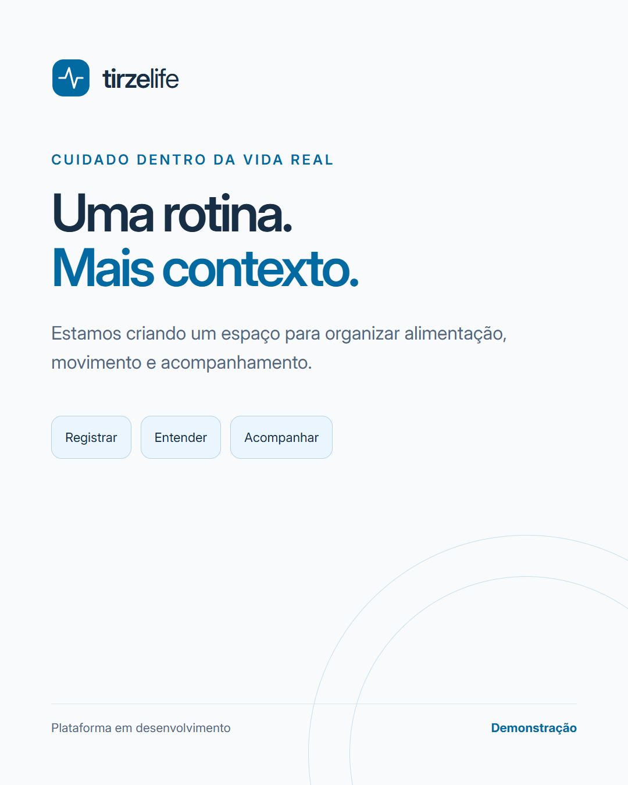
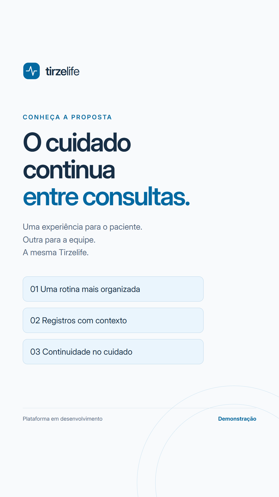
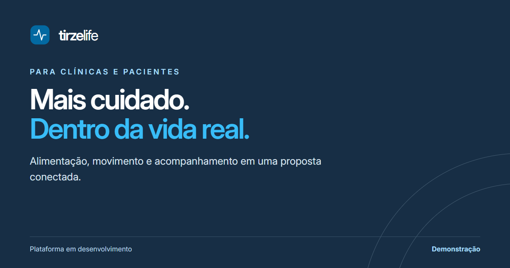

Feed / carrossel
1080 × 1350 · Instagram e Facebook
Baixar PNGModelo editável tirzelife
tirzelifeA mesma identidade na landing, no app do paciente, no painel da clínica e nos conteúdos sociais.
Direção aplicada à demonstração · 22 de outubro de 2026
A paleta mantém o azul do produto. A fonte e a navegação seguem um padrão comum. As cores expressam uma direção de marca; a experiência precisa ser validada com quem usa.
Azul profundo#172E45
Azul principal#0369A1
Destaque no escuro#38BDF8
Superfície#F8FAFC
Texto secundário#52677E
Confirmação#0F766E
Verde confirma; âmbar chama atenção; vermelho identifica erro. Sempre com texto ou ícone, sem depender apenas da cor.
Informações claras para registrar a rotina e conversar com a equipe. Este é um exemplo visual, sem dados de pacientes.
Plano alimentarSua rotina tem uma história.
Alimentação · Movimento · Evolução · Clínica
0123456789 · Á É Í Ó Ú Ç Ã Õ
Fonte variável carregada localmente, com licença incluída. Texto 400, controles 500 e títulos 600. Formulários com 16 px; controles principais com pelo menos 44 px de altura.
Rascunhos editáveis, com a mesma marca. A capa vertical é uma imagem, não um vídeo pronto. Ajustar textos e conferir os cortes antes de publicar.

1080 × 1350 · Instagram e Facebook
Baixar PNGModelo editável
1080 × 1920 · Reels, Stories e TikTok
Baixar PNGModelo editável
1200 × 630 · Prévia do site
Baixar PNGModelo editávelEssa base não representa certificação de acessibilidade, aprovação das plataformas ou superioridade comprovada.